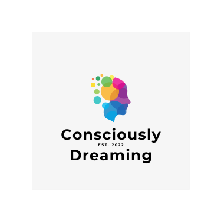

Mission Statement(s)
Neurodiverse | Story Architect | Passionately Creative | Hopelessly Prolific
“Be yourself; everyone else is already taken.”
“I've learned that people will forget what you said, people will forget what you did, but people will never forget how you made them feel.”
“To be yourself in a world that is constantly trying to make you something else is the greatest accomplishment.”
“I like nonsense, it wakes up the brain cells. Fantasy is a necessary ingredient in living.”
“There are only two ways to live your life. One is as though nothing is a miracle. The other is as though everything is a miracle.”
“Fairy tales are more than true: not because they tell us that dragons exist, but because they tell us that dragons can be beaten.”
“I have not failed. I've just found 10,000 ways that won't work.”
“I am enough of an artist to draw freely upon my imagination. Imagination is more important than knowledge. Knowledge is limited. Imagination encircles the world.”
“Life isn't about finding yourself. Life is about creating yourself.”
“What is done in love is done well”
“It is impossible to live without failing at something, unless you live so cautiously that you might as well not have lived at all—in which case, you fail by default.”
As a junior in college pursuing a Bachelor's degree in Communication with an emphasis and certificate in Web Development and Design, I am passionate about consciously creating and bringing ideas to life! With a deep love for both the creative and technical aspects of web development, I strive to blend aesthetics and functionality to deliver exceptional user experiences.
Driven by my inherent curiosity and a desire to explore, I find joy in venturing into uncharted territories both mentally and physically. Whether it's diving into new technologies or embarking on outdoor adventures, I embrace challenges with enthusiasm and a hunger for growth.
Resilience, integrity, and dedication are at the core of my work ethic. I approach every project with unwavering commitment, ensuring that I deliver high-quality results that exceed expectations. I embrace setbacks as opportunities for learning and growth, constantly pushing myself to overcome obstacles and achieve my goals. I truly believe that slow is smooth, and smooth is fast.
Passion fuels my creativity. Believing in the power of authentic connections, I strive to create meaningful experiences through my work.
A desire to learn and grow are fundamental to my approach. I am constantly seeking to expand my understanding of the ever-evolving universe and work towards exponential development.
Experienced in structuring and writing clean and semantic HTML code, I am skilled in complying with web standards and implementing best practices. I find joy in the puzzle of what I call my "tech-based marble run."
Creatively integrate design and functionality to focus on responsive and accessible web designs. I leverage my journalism design history and feel confident exploring unique and innovative concepts.
Proficient in utilizing, customizing, and extending Bootstrap framework and components for rapid and efficient development - creating responsive and visually appealing websites.
As a curious and prolific writer with a keen eye for detail, I am establishing an ability to communicate complex technical concepts effectively as well as passionately innovate engaging and user-friendly content.
Caiia G.
Dreaming and Creating in Digital Spaces
My Mission
As an imaginative, coding, front-end web developer, my mission is to bridge the gap between design and effectiveness, creating aesthetically functional websites that go beyond just getting the job done.
I strive to transform the online experience into a work of art, where every element is carefully crafted to delight and engage users.
Passionate about creativity and writing, I bring a unique perspective to my work, infusing it with innovation and storytelling. Establishing a background in communications, web development, design, and writing, I aim to connect with others globally by leveraging the power of the internet to create meaningful and impactful digital experiences.
Contact Section
If you have come here looking for the name Callan, yes, that is also I! However, in my creative and professional pursuits, I tend to prefer the name Caiia! There is a ton more to be said, but we will leave that all for another time.
Thank you for your time, energy, curiosity, and any questions you may have - I would love the opportunity to talk more if you would enjoy!
Best wishes and warmest regards, I hope to hear from you soon!